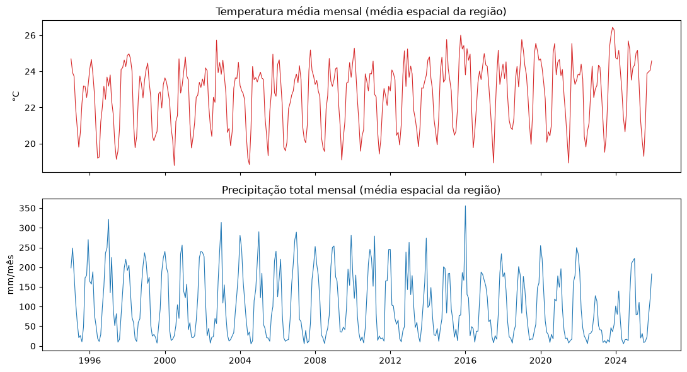
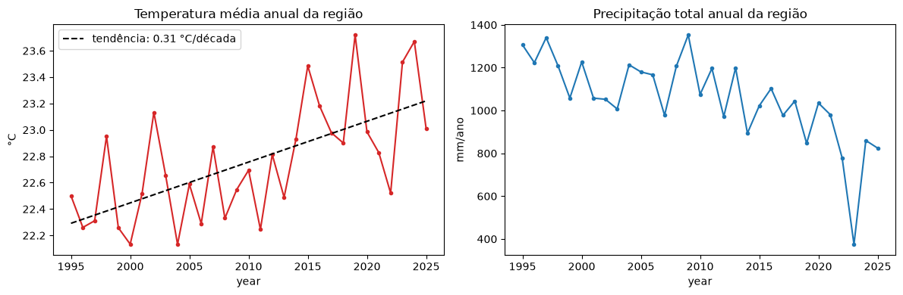
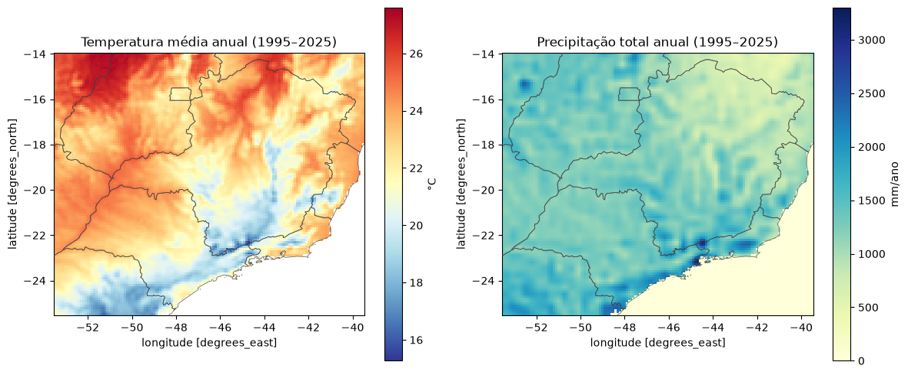
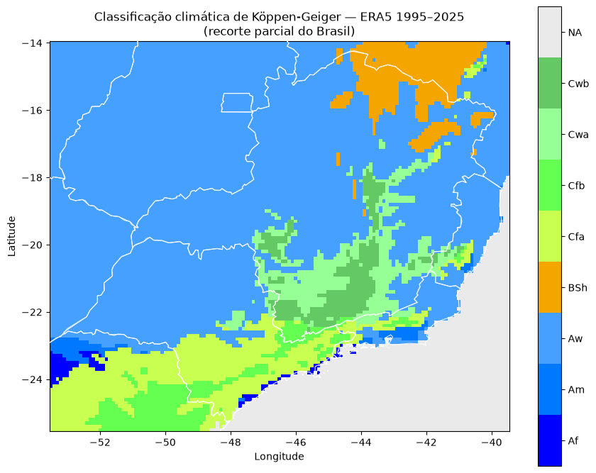
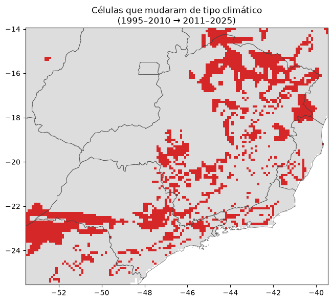

Este documento descreve a metodologia, as tecnologias e os resultados de uma análise exploratória que reproduz, com dados de reanálise ERA5 (1995–2025), a lógica de classificação climática proposta por Köppen (1936) e aplicada ao Brasil por Alvares et al. (2013) no artigo "Köppen's climate classification map for Brazil" (Meteorologische Zeitschrift, v. 22, n. 6).
O artigo original constrói um mapa de 1 ha de resolução a partir de 2.950 estações meteorológicas brasileiras, com normais climatológicas de 1950–1990, interpoladas por krigagem (precipitação) e por um modelo multivariado de temperatura em função de latitude, longitude e altitude (SRTM). O objetivo aqui não é replicar esse resultado com a mesma fidelidade — a diferença de fonte de dados, resolução e período impede isso — mas sim aplicar o mesmo algoritmo de decisão (Tabela 1 do artigo, idêntico a Kottek et al. 2006 / Peel et al. 2007) sobre um produto de dados moderno, gratuito e atualizado, discutindo onde e por que os resultados convergem ou divergem do mapa de referência.
Escopo real dos dados obtidos. Por uma limitação na área geográfica solicitada ao Copernicus Climate Data Store, o recorte final cobre apenas parte do Brasil — aproximadamente Goiás, Distrito Federal, Mato Grosso do Sul, Minas Gerais, São Paulo, parte do Paraná e do sul da Bahia/Tocantins (lat -14° a -25.5°, lon -53.5° a -39.5°) — e não o território nacional completo do artigo original. Essa limitação está documentada na Seção 2 e refletida em todos os mapas.
| Produto | reanalysis-era5-single-levels-monthly-means |
| Provedor | Copernicus Climate Data Store (CDS), ECMWF |
| Variáveis | 2m_temperature (2t) e total_precipitation (tp) |
| Tipo de produto | monthly_averaged_reanalysis |
| Resolução espacial | grade regular 0.1° (~11 km), reamostrada da grade nativa ~31 km |
| Resolução temporal | médias mensais, jan/1995 – dez/2025 (31 anos; 744 campos = 2 variáveis × 12 meses × 31 anos) |
| Formato do arquivo | GRIB2 |
O primeiro arquivo GRIB obtido (via parâmetros sugeridos por um assistente de IA de propósito geral) apresentava dois problemas que impediriam a classificação de Köppen:
evaporation (e) em vez de
total_precipitation (tp). O algoritmo de Köppen depende de precipitação, não de evaporação.O problema (1) foi corrigido; o problema (2) foi identificado mas mantido deliberadamente nesta rodada de análise, a pedido do usuário, para permitir avançar com a validação do algoritmo antes de pagar o custo (tempo de download, área de armazenamento) de um request para o Brasil inteiro.
dataset = "reanalysis-era5-single-levels-monthly-means"
request = {
"product_type": ["monthly_averaged_reanalysis"],
"variable": ["2m_temperature", "total_precipitation"],
"year": [str(y) for y in range(1995, 2026)],
"month": [f"{m:02d}" for m in range(1, 13)],
"time": ["00:00"],
"area": [6, -74, -34, -34], # Norte, Oeste, Sul, Leste -- Brasil inteiro
"data_format": "grib",
}
O parâmetro area acima cobriria o Brasil inteiro (caso seja necessário reprocessar); o arquivo
efetivamente utilizado nesta análise usa uma área menor, como descrito na Seção 1.
cfgrib diretamente porque: (a) é o caminho que o próprio
ECMWF está consolidando para substituir o uso manual de cdsapi + cfgrib;
(b) integra nativamente com o ecossistema earthkit (regrid, climate, plots) caso a
análise precise crescer; (c) abstrai detalhes de baixo nível do eccodes mantendo acesso completo aos
metadados GRIB quando necessário. Na prática, ela converte o GRIB para xarray.Dataset via
to_fieldlist().to_xarray(), e todo o processamento subsequente usa xarray puro.time,
latitude, longitude), com suporte nativo a agregações temporais
(groupby("time.month"), groupby("time.year")) que são o núcleo do cálculo
de climatologia mensal. É o padrão de fato para dados meteorológicos em Python.eccodes
(ausente no Arch Linux usado) e de compilação local.geometry.simplify(0.03°, preserve_topology=True) para produzir
um traço suave e legível, evitando o serrilhado de um vetor de alta resolução numa grade de ~11 km.pcolormesh, paleta categórica customizada no padrão Köppen-Geiger/Peel et al. 2007).
Optou-se por não usar cartopy (não instalado no ambiente e desnecessário aqui, já que os dados já vêm
em grade lat/lon regular e a delimitação de estados é feita via geopandas sobre os mesmos eixos).nbconvert --execute foi usado para rodar o notebook de ponta a ponta de
forma reprodutível e determinística a cada alteração, servindo como verificação de regressão.@page, quebras de página, cabeçalho/rodapé com numeração), necessário
para um documento com esse nível de formatação.Ambiente: Python 3.14 em ambiente virtual isolado (.venv), Arch Linux. Todas as
dependências foram instaladas via pip dentro do venv, sem alterar pacotes do sistema.
O GRIB é lido com earthkit.data.from_source("file", ...).to_fieldlist().to_xarray(), resultando
num xarray.Dataset com dimensões time (372 passos mensais), latitude
(116 pontos) e longitude (141 pontos). Duas conversões de unidade são necessárias:
2t em Kelvin; subtrai-se 273,15 para obter graus Celsius.tp como uma
taxa média diária (metros/dia) para o mês, não como total acumulado. A conversão para o total
mensal em milímetros é: precip_mm = tp × dias_no_mês × 1000, usando
time.dt.days_in_month do xarray para tratar corretamente meses de 28/29/30/31 dias.Validação da conversão: comparando a precipitação anual resultante com normais climatológicas conhecidas, Curitiba (PR) deu 1.513 mm/ano no ERA5 contra 1.550 mm/ano citados no artigo original (viés de -2%), confirmando que a fórmula de conversão está correta.
Para cada célula da grade, calcula-se a média dos 31 anos por mês-calendário
(groupby("time.month").mean("time")), produzindo dois arrays de 12 valores por pixel —
temperatura média mensal e precipitação total mensal. É essa climatologia, e não a série mensal bruta, que
alimenta as regras de Köppen, replicando o conceito de "normal climatológica" (>25 anos) usado no artigo
original (1950–1990, 41 anos de estações).
A classificação foi implementada como uma função vetorizada em NumPy que replica a Tabela 1 do artigo (idêntica a Kottek et al. 2006 e Peel et al. 2007, citados no próprio artigo como referência de reprodutibilidade). Como toda a região coberta está no hemisfério sul, verão é definido como outubro–março e inverno como abril–setembro. A ordem de prioridade na avaliação segue o padrão Peel et al. (2007):
| Ordem | Zona | Critério de entrada | Subtipos |
|---|---|---|---|
| 1 | B – Árido | MAP < 10·Pthreshold | BWh/BWk (árido), BSh/BSk (semiárido); h/k por Tmédia ₹ 18 °C |
| 2 | A – Tropical | Tfria ≥ 18 °C | Af (Pseca≥60mm), Am (monção), Aw/As (seca inverno/verão) |
| 3 | E – Polar | Tquente < 10 °C | ET (tundra), EF (gelo) |
| 4 | C/D – Temperado/Continental | demais casos | f/s/w (regime de chuva) × a/b/c/d (regime de temperatura) |
Onde MAP é a precipitação anual e Pthreshold segue a formulação padrão:
2×Tmédia se ≥70% da chuva cai no semestre de inverno; 2×Tmédia+28 se
≥70% cai no verão; e 2×Tmédia+14 caso contrário. A implementação completa está na
Seção 4 do notebook (função koppen_classify), com tratamento explícito de células sem dado
válido (oceano dentro da bounding box, rotuladas NA e excluídas das estatísticas).
Para dar contexto geográfico aos mapas, os limites dos 27 estados brasileiros (GeoJSON, fonte
click_that_hood) são sobrepostos com geopandas, com a geometria simplificada
(tolerância 0,03°) para produzir um traço suave em vez do vetor de alta resolução original. Um
utilitário add_state_borders(ax) desenha os contornos preservando os limites de eixo já
definidos pelos dados climáticos (sem isso, o geopandas reenquadraria automaticamente o gráfico para o
Brasil inteiro).
Antes de confiar nos resultados, o algoritmo foi verificado em duas frentes independentes: testes sintéticos (o código está correto?) e validação contra o artigo original (o resultado é plausível?).
Foram construídos manualmente 15 perfis mensais de temperatura/precipitação, um para cada tipo climático relevante — incluindo tipos que não ocorrem nos dados reais da região (Cwc, Csa, Csb, ET, EF, BWh), para garantir que as regras das zonas D/E e dos subtipos raros também estivessem corretas, e não apenas as que "por sorte" aparecem no recorte geográfico disponível.
OK esperado=Af obtido=Af Tcold= 27.0 Thot= 27.0 MAP= 2460mm Pdry= 80mm OK esperado=Am obtido=Am Tcold= 27.0 Thot= 27.0 MAP= 2525mm Pdry= 15mm OK esperado=Aw obtido=Aw Tcold= 26.0 Thot= 26.0 MAP= 1708mm Pdry= 1mm OK esperado=As obtido=As Tcold= 26.0 Thot= 26.0 MAP= 1475mm Pdry= 20mm OK esperado=BSh obtido=BSh Tcold= 26.0 Thot= 26.0 MAP= 510mm Pdry= 1mm OK esperado=BWh obtido=BWh Tcold= 28.0 Thot= 28.0 MAP= 27mm Pdry= 0mm OK esperado=Cfa obtido=Cfa Tcold= 13.0 Thot= 24.0 MAP= 1540mm Pdry=110mm OK esperado=Cfb obtido=Cfb Tcold= 13.0 Thot= 20.5 MAP= 1460mm Pdry= 80mm OK esperado=Cwa obtido=Cwa Tcold= 17.5 Thot= 23.5 MAP= 1415mm Pdry= 15mm OK esperado=Cwb obtido=Cwb Tcold= 15.5 Thot= 21.5 MAP= 1424mm Pdry= 10mm OK esperado=Cwc obtido=Cwc Tcold= 4.5 Thot= 11.5 MAP= 1260mm Pdry= 15mm OK esperado=Csa obtido=Csa Tcold= 17.5 Thot= 22.7 MAP= 810mm Pdry= 20mm OK esperado=Csb obtido=Csb Tcold= 17.0 Thot= 21.5 MAP= 810mm Pdry= 20mm OK esperado=ET obtido=ET Tcold= -3.0 Thot= 5.0 MAP= 600mm Pdry= 50mm OK esperado=EF obtido=EF Tcold= -5.0 Thot= -5.0 MAP= 360mm Pdry= 30mm 15/15 casos corretos
Resultado: 15/15 casos corretos. O algoritmo implementa fielmente as regras da Tabela 1 do artigo em toda a árvore de decisão, não apenas nos ramos exercitados pelos dados desta região.
O algoritmo estar correto não garante que o resultado bata com o artigo — os dados de entrada são outros (ERA5 1995–2025 vs. 2.950 estações 1950–1990). A tabela abaixo compara, ponto a ponto, as localidades típicas da Figura 8 do artigo que caem dentro da bounding box baixada:
| Local | Köppen artigo | Köppen ERA5 | Bate? | P artigo (mm) | P ERA5 (mm) | Viés P | T ERA5 (°C) |
|---|---|---|---|---|---|---|---|
| Ribeirão Preto (SP) | Cwa | Aw | NÃO | 1400 | 1233 | −12% | 22,7 |
| Belo Horizonte (MG) | Cwb | Cwa | NÃO | 1500 | 924 | −38% | 20,8 |
| Pico da Bandeira | Cwc | Cwb | NÃO | 1300 | 1254 | −4% | 17,4 |
| Curitiba (PR) | Cfb | Cfb | sim | 1550 | 1513 | −2% | 17,2 |
| Brasília (DF) | Aw | Aw | sim | 1500 | 1262 | −16% | 21,9 |
Interpretação de cada divergência:
Antes da classificação, a série temporal mensal (médias espaciais sobre toda a região) foi inspecionada para checar ruído e tendência, seguida de uma regressão linear simples sobre a média anual:


Mapas de temperatura média anual e precipitação total anual, calculados a partir da climatologia mensal (Seção 4.2), com os limites estaduais sobrepostos:


NA) são pontos oceânicos dentro da bounding
box (litoral de BA/ES/RJ), sem classificação por definição.Distribuição percentual dos tipos climáticos nas 13.966 células de terra válidas (85,4% do total):
| Clima | Nº de células | % |
|---|---|---|
| Aw | 9.639 | 69,0% |
| Cfa | 1.373 | 9,8% |
| Cwa | 825 | 5,9% |
| BSh | 789 | 5,6% |
| Cfb | 602 | 4,3% |
| Cwb | 465 | 3,3% |
| Am | 155 | 1,1% |
| Af | 118 | 0,8% |
A predominância de Aw (Cerrado do Centro-Oeste), seguida por Cfa/Cfb (Sul de SP e PR) e Cwa/Cwb (planaltos de MG/SP), é consistente com a geografia climática esperada para essa região específica do país.
Uma vantagem de dispor de 31 anos de ERA5 é poder checar se a classificação está migrando ao longo do tempo — algo que o artigo original, limitado a uma única normal 1950–1990, não conseguia investigar. A climatologia foi recalculada separadamente para os dois sub-períodos e comparada célula a célula:

As dez transições mais frequentes:
| Transição | Nº de células |
|---|---|
| Aw → BSh | 858 |
| Cwa → Aw | 332 |
| Am → Aw | 297 |
| Cfb → Cfa | 176 |
| Cfa → Aw | 165 |
| Cwb → Cwa | 149 |
| Af → Am | 72 |
| Cwa → Cfa | 47 |
| Af → Aw | 45 |
| Cfa → Am | 24 |
A transição dominante, Aw → BSh (858 células), foi decomposta para separar o
efeito de queda de precipitação do efeito de aquecimento (que eleva o limiar Pthreshold da zona
árida, empurrando células para B mesmo sem mudança de chuva):
Células Aw -> BSh: 858
precipitação anual : 856.6 -> 695.2 mm (-161.4 mm)
temperatura média : 23.50 -> 24.09 °C (+0.60 °C)
limiar 10·Pthresh : 750.0 -> 761.9 mm (+11.9 mm)
Contribuição para a mudança de classe:
queda de precipitação : 161.4 mm (93%)
elevação do limiar (aquecimento): 11.9 mm ( 7%)
Atenção: 387 das 858 células (45%) estão a menos de 50 mm da fronteira,
ou seja, a reclassificação é marginal e poderia reverter com poucos anos diferentes.
Interpretação recomendada: 93% do efeito vem de queda real de precipitação, não de aquecimento; mas quase metade das células reclassificadas está muito próxima da fronteira de decisão, e a janela 2011–2025 inclui a seca severa de 2012–2017 no vale do São Francisco. O resultado deve ser lido como "episódio de seca capturado pela classificação", não como evidência de mudança climática consolidada — distinção que exigiria uma série mais longa e testes de significância estatística.
O algoritmo passa em 15/15 testes sintéticos (Seção 5.1), portanto as divergências abaixo vêm dos dados de entrada, não das regras de classificação.
area=[6, -74, -34, -34] (arquivo cds_request.py).NA — comportamento esperado, não falha de classificação.As não aparece (0 células) nesta bbox, embora o artigo mapeie As no norte de MG.
O As do artigo concentra-se no Nordeste (fora da bbox); na porção mineira, a diferença cai novamente na
sensibilidade de fronteira discutida acima.Recomendação para trabalho futuro: (1) reprocessar com a bbox do Brasil inteiro; (2) validar o viés de precipitação do ERA5 contra uma rede de estações (ex.: INMET) antes de tirar conclusões sobre mudança de tipo climático; (3) se a resolução de picos isolados (Cwc) for relevante, considerar ERA5-Land (grade ~9 km) ou um downscaling estatístico com DEM, replicando a abordagem do artigo original.